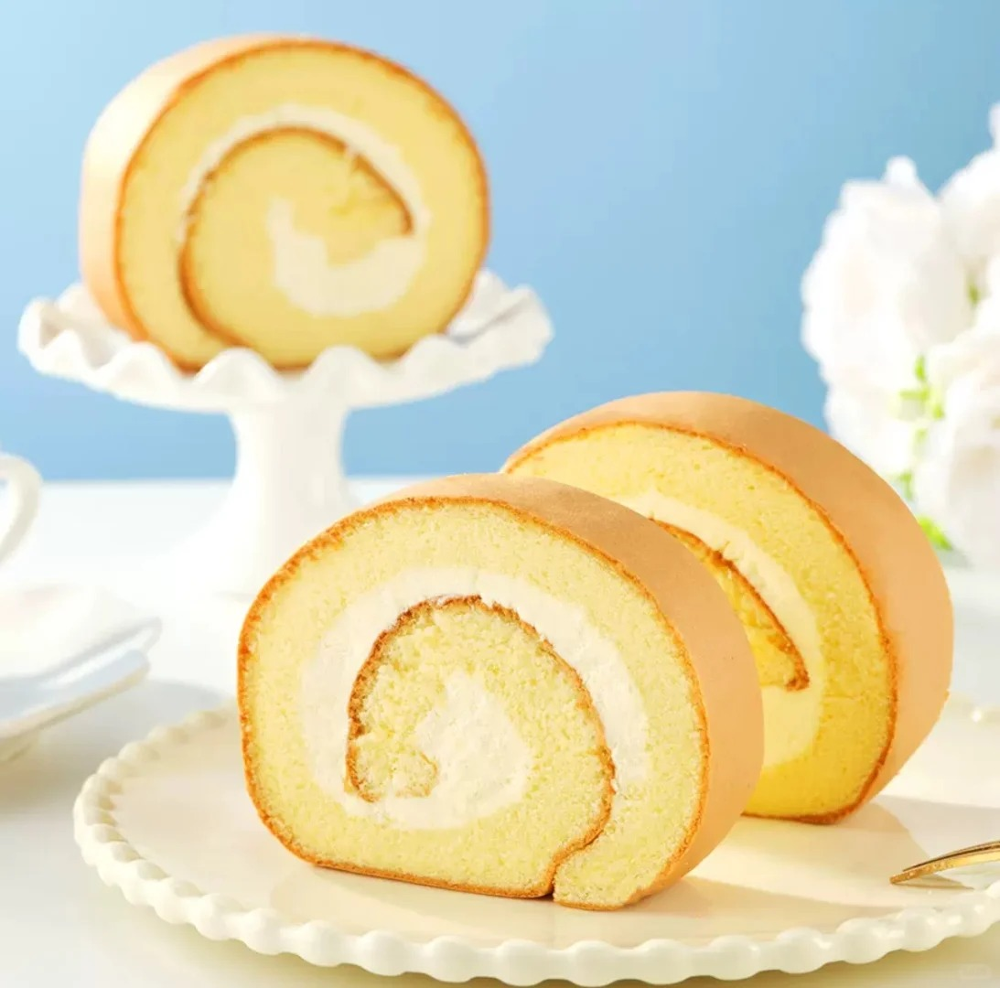
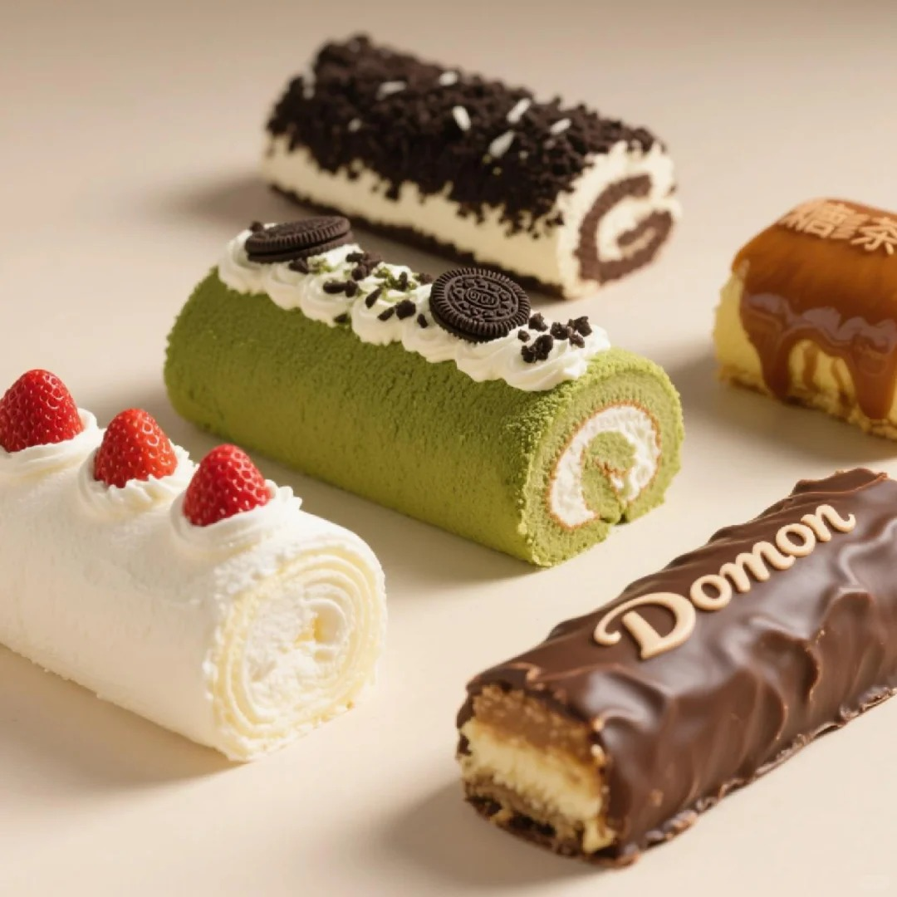
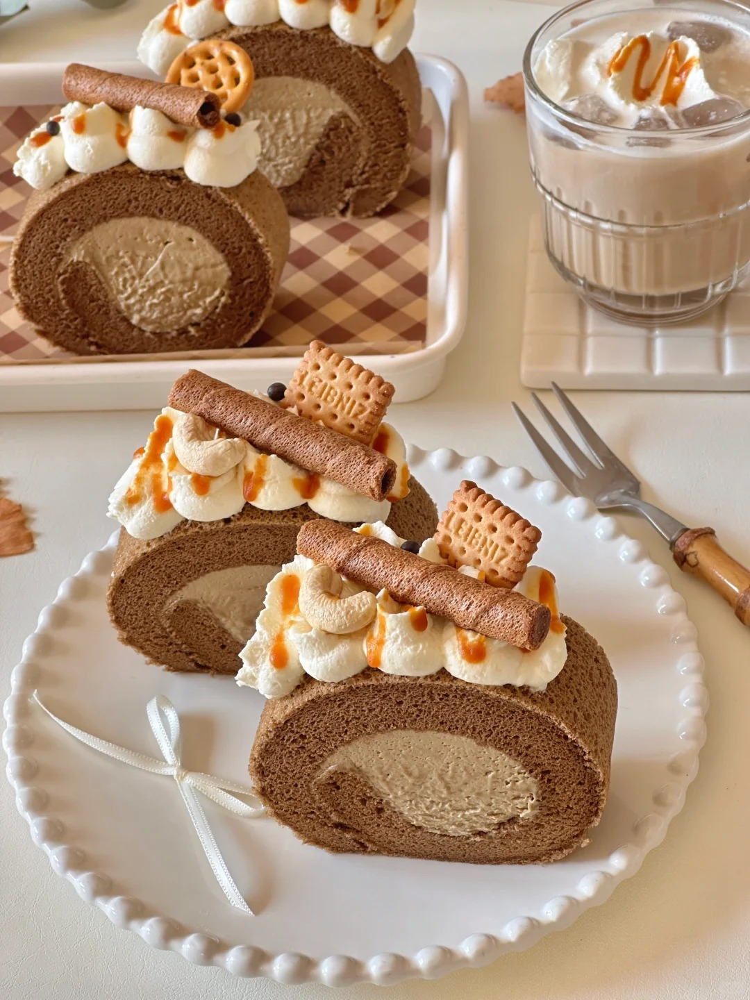

瑞士卷



瑞士卷（Swiss Roll）是一种卷状蛋糕，在世界各地都很受欢迎。瑞士卷的口感绵密柔软，入口即化。其外层酥脆，内部松软，每一口都能感受到蛋糕的细腻与香甜，搭配上奶油或果酱的香甜，味道十分美妙。制作方法通常先将蛋黄和蛋白分离，分别进行处理。蛋黄中加入玉米油、牛奶等搅拌均匀，再筛入低筋面粉搅拌成蛋黄糊；蛋白中加入细砂糖、柠檬汁等打发成蛋白霜，然后将蛋白霜分三次加入蛋黄糊中翻拌均匀，制成蛋糕面糊。将面糊倒入烤盘中烤成薄薄的蛋糕片，出炉后放凉，在表面涂抹上奶油或果酱，再卷成卷状，冷藏定型即可。 瑞士卷最早可追溯至 19 世纪中期的英国。英国糕点师塞缪尔・伯切特（Samuel Burchett）在伦敦的伍尔沃斯商店工作时，发明了一种以黄油蛋糕卷裹上果酱和鲜奶油的甜点，并于 1893 年申请了专利，这种甜点最初被称为 “李子卷”。后来，它传入欧洲大陆，可能经由德国或奥地利的糕点师进一步改良，由于瑞士当时以精致手工艺品闻名，欧洲人逐渐将其命名为 “Swiss Roll”，即瑞士卷。
制作方法：